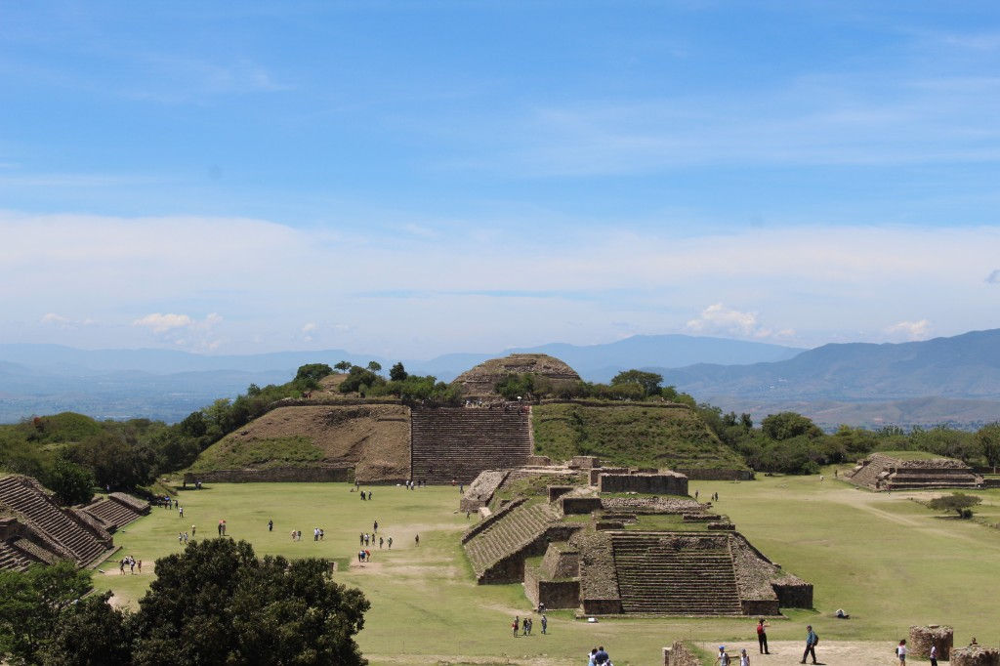

4 en 1 Valles Centrales
Tour Monte Albán
Descubre la majestuosa zona arqueológica de Monte Albán, conoce el arte de los alebrijes, explora la tradición del barro negro y degusta mezcales artesanales en un recorrido completo por la cultura oaxaqueña.